Publication
Ticha Sethapakdi, Daniel Anderson, Adrian Reginald Chua Sy, Stefanie Mueller.
Fabricaide: Fabrication-Aware Design for 2D Cutting Machines
In Proceedings of CHI ’21.
PDF Video Talk Slides Code
Video
Press
CHI Talk Video Slides


Fabricaide: Fabrication-Aware Design for 2D Cutting Machines
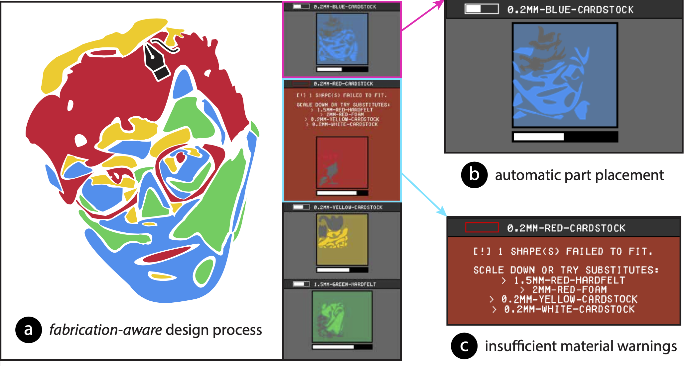

Figure 1. (a) Fabricaide enables a fabrication-aware design process for machine-cut objects by preparing them for fabrication while they are being designed. (b) As the user develops their design, Fabricaide decides good placements of parts onto the user's available materials, (c) provides warnings if the user does not have enough material for a design, and makes suggestions for how the user can resolve insufficient material cases. (d) Fabricaide extends existing design tools and can be used in both 2D and 3D workflows.
Designers of machine-cut objects must often consider whether and how their design can be fabricated with their available materials. In contrast to tools that support preparing finished designs for fabrication, we investigate shortening the feedback loop between design creation and fabrication preparation. To this end, we present Fabricaide, a fabrication-aware tool that interleaves the processes of creating and preparing designs for fabrication. By providing live feedback on how parts should be placed onto material sheets, analyzing how much material is consumed, and alerting users when designs are infeasible, Fabricaide enables users to proactively tailor their design to their available material. Fabricaide achieves this with a custom packing algorithm that arranges parts onto material sheets at interactive speeds. Our qualitative user study shows how Fabricaide can support different workflows, encourage material-conscious design practices, and provide insights on how to further improve similar interfaces in the future.
INTRODUCTION
Compared to other digital fabrication processes, laser cutters, die cutters, and similar machines have a low barrier to entry: designs can be created using simple 2D graphics software, many cutting materials can be readily obtained from local craft stores, and the fabrication process has fast turnaround times that allow for trial and error. While designs are fabricated from flat sheets of material, parts can also be assembled into 3D structures, enabling laser cutters to be used for a variety of applications. Although laser cutters used to be exclusive to industrial or academic settings, recent developments such as the Glowforge and the Dremel LC40 Laser Engraver have brought laser cutters to the home.
However, laser cutters -- and cutting machines as a whole -- are not without their shortcomings. As a subtractive manufacturing process, they can produce significant amounts of leftover material which might never be used and go to waste. Given this, an important consideration users have is how to make the best use of the material sheets they have available. This is often tackled at the time of fabrication: for example, once users are finished with their digital design, they may try to arrange the parts so that it maximizes their space efficiency on the sheet. The task becomes particularly challenging when the sheets contain existing holes, which is a frequent occurrence in shared makerspaces and FabLabs. Such sheets make it difficult for users to estimate how much material is still available and determine whether designs are feasible to fabricate. This is further complicated if the user wishes to create a multi-material design, which involves decomposing the design in their head into multiple pieces and then planning the layout of parts on multiple sheets simultaneously. Users would typically have to undergo a manual process which involves determining the locations of any holes in the sheet and adjusting the position of parts in their design accordingly, or tightly packing their design into a rectangle and trying to place it on an empty space in the sheet.
In recent years, several research projects have investigated how to help users organize finished designs onto their existing materials. Tools, such as VisiCut and PacCam, for instance, provide interfaces that help users with positioning their designs onto material sheets once they are ready to fabricate them. While such interfaces aid users in planning their design at the time of fabrication, tools that do so during the design phase itself are under-explored.
In this paper, we present Fabricaide, a system that uses its knowledge of the user's available material sheets to interleave the design creation and fabrication preparation processes. Fabricaide acts as an interface that augments existing design tools, and is compatible with both 2D and 3D workflows (Fig. 1d). As users create their design, the tool optimizes the placement of parts onto existing sheets and provides warnings if there is insufficient material with suggestions for material substitutes. By giving users feedback about the feasibility of their design as it is being created, Fabricaide allows them to design in the context of available materials. This benefits not only experienced designers, but also novices who are more prone to making mistakes that may be hard to detect in a normal design environment. Packing parts at design time requires a 2D part placement algorithm that accounts for existing holes and works at interactive speeds. We provide such an algorithm and, in our technical evaluation, show that it is faster than existing open-source tools for 2D packing while still producing comparable-quality solutions. We demonstrate the utility of Fabricaide in a qualitative user study in which participants used the tool for one week. In summary, with this work we contribute:
- a workflow that shortens the feedback loop between design creation and fabrication preparation for machine-cut objects by integrating material availability and fabrication preparation into the design phase,
- the design of a tool that facilitates this workflow, enabled by features including virtual material sheet tracking, multi-material sheet assignment, automated part placement, and material utilization analysis,
- an algorithm for packing parts onto material sheets with preexisting holes at interactive speeds, allowing the design tool to continuously provide information on material availability and utilization,
- a qualitative user study that demonstrates how knowing about material constraints during the design phase affects the user's design process.
MOTIVATION
Recent exploratory work has delved into the needs and desires of professionals who regularly use cutting machines. Yildirim et al. conducted workshops and interviews with professional users of digital fabrication tools and discovered that participants desired better tools for keeping track of resources, actively preventing errors, and automating mundane tasks, particularly when there is a chance for human error. To further refine our understanding of users' needs with respect to managing materials and how this may affect their process for creating machine-cut designs, we performed formative interviews with six designers who had used cutting machines for a diverse range of applications (school work, professional work, hobby projects, research). We focused on topics such as whether/how the designer considers their available material while they are creating a design, whether they plan around leftover material while designing, and in what circumstances they would choose to alter their design if they did not have sufficient material to fabricate it.
Designers frequently use leftover material for their work, particularly when they have to incur material costs themselves, although doing so comes with its own set of challenges. P2 noted how using leftover material is good to do but can be "such a pain", as it is more prone to errors. They recounted the occasions where they had wasted material by accidentally cutting into existing holes, which made them more hesitant to use leftover material for larger scale work or when it is not obvious how the design should fit. To avoid the issue of cutting into existing holes, the designers would often measure the positions of holes on their sheets and draw them as rectangles that need to be avoided in their design tool. P4 expressed that this process "is a real pain", and P6 said they could spend up to an hour figuring out how parts should be arranged. This demonstrates the importance of having tool assistance for such tasks that require careful planning and precision.
The option to utilize scrap material rather than always purchasing new sheets is important, since, as some designers noted, buying new sheets is not always an option. P3 commented that leftover material is particularly useful when material is hard to find or simply inaccessible due to working outside of normal store hours. Additionally, geographic constraints may make obtaining additional material challenging or impossible. Cost and convenience was also a concern; P2 stated that they would have to think hard before having to buy expensive materials or order them through someone else, while P4 generally did not like buying material as it would require foresight and planning. An interesting consideration was having one-of-a-kind material sheets that cannot be bought. For example, P3 said they once laser cut designs out of material sheets they made themselves using thin slabs of plaster.
Current workflows cause designers to rely on arranging parts of their design onto material sheets at the very end, when they are ready to fabricate it. Some designers suggested that the reason why they do not consider how designs will be prepared for fabrication in advance is because doing so manually while designing is confusing and difficult. For example, P5's justification was that it would require them to think about the specific placement and rotation of parts: factors that often differ between the imagined design and the prepared design to be cut out by the cutting machine. This suggests that tools could support users on their imagined design, while automatically optimizing it for fabrication.
While there are tools that support preparing designs for fabrication after the design is complete, the above discussion suggests that packing earlier could be beneficial, particularly when material is scarce and there are many used sheets with existing holes. Designers had several different strategies for managing situations in which they were short on material. When purchasing additional material is not a viable solution, designers must modify their design in some way. Designers' modification strategies ranged from simple options, such as switching to a different material with more space or downsizing parts, to more complex ones which involve changing the geometry of the design. For instance, P4 would choose to make some parts thinner, while P3 and P6 might split large pieces in half and add joints to join them after fabrication. If the additional modifications were still not sufficient to make the design feasible for fabrication, designers may have to undergo a long trial-and-error process, potentially wasting significant time trying to prepare an infeasible design. Some modifications, such as downsizing a part, might require further cascading modifications to make other parts compatible, which could invalidate previous preparation efforts.
An important takeaway from these interviews is that designing for fabrication is often an iterative, rather than linear, process. This motivates a need to develop tools that can account for fabrication constraints while designing to shorten the feedback loop between design creation and fabrication preparation. Such a system requires a balance of careful engineering (i.e., fast algorithms that give users feedback quickly enough to not hinder the design iteration process) and design (i.e., an interface that clearly conveys the necessary information).
CORE SYSTEM FEATURES
In traditional machine-cutting workflows, the machine is naive as it does not have any knowledge about how much material is available or how much material the current design requires. Since it is missing both pieces of information, it cannot determine if a design can be fabricated with the available resources. In contrast, Fabricaide maintains information about the available space on each material sheet as well as the geometries of the user's design. Fabricaide uses this information, combined with its automated part placement, to decide whether a design is feasible before users proceed to fabricate it. The workflow enabled by Fabricaide is an iterative process that cycles between creating parts, assigning materials, and checking packing previews.
Compatible with Existing Design Tools
The Fabricaide interface (Fig. 2) is a stand-alone application that augments existing design tools and can be used with a variety of design workflows. All that is required is that the design tool exports the designs as 2D vector outlines. The export can either be done by the user manually, or, if the tool supports it, the design can be automatically exported either periodically or whenever a design part is added or modified. As part of our main walkthrough, we demonstrate Fabricaide's use with Adobe Illustrator, a 2D vector drawing tool. We later show how Fabricaide can be applied to other design tools and workflows by integrating it with FlatFab, a CAD tool for producing 3D laser-cuttable objects.
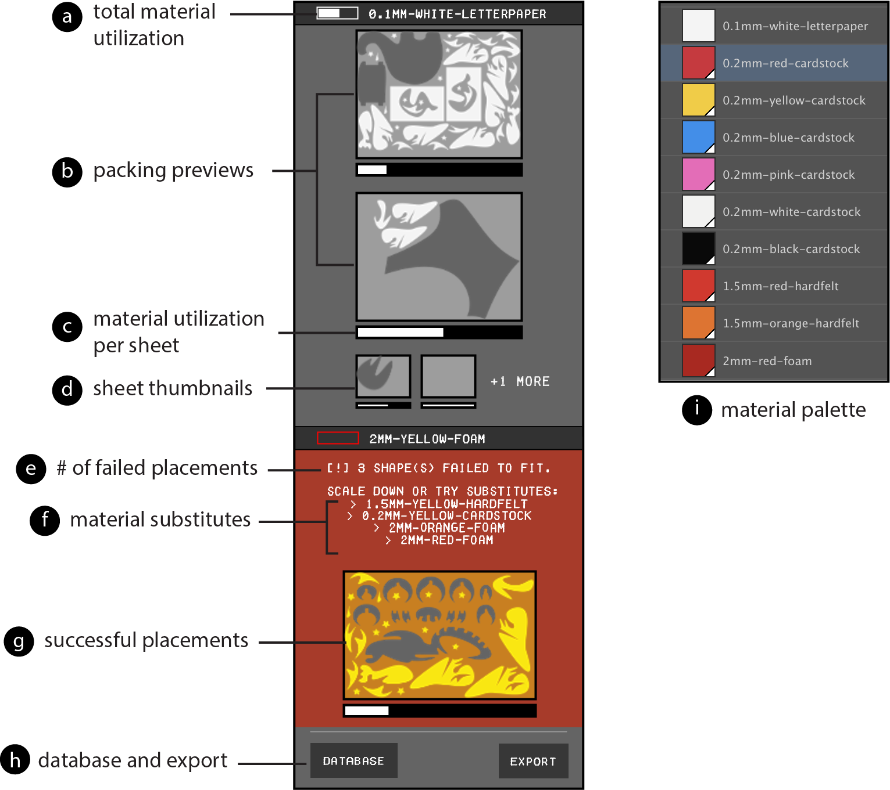
Figure 2. The components of the Fabricaide interface.
Figure 2. The components of the Fabricaide interface.
Drawing Parts and Assigning Materials
Parts can be made using any of the drawing tools in Illustrator, provided that they produce a closed path. To enable the tool to assign parts of multi-material designs to material sheets, users specify the material for a part with Fabricaide's material palette (Fig. 2i), which is a collection of Illustrator swatches. Each swatch has a unique name and color that identifies a material with a specific type (e.g., wood or plastic), color, and thickness. To assign materials to parts of their design, users assign a swatch to the "fill" attribute before or after the part is drawn.
Live Packing Previews
Fabricaide uses live packing previews to show users how the parts are placed (Fig. 3). When the user creates their first part with a particular material assignment, Fabricaide tries to find a good placement for it on a sheet corresponding to its material, optionally considering rotations of the part. If Fabricaide places it successfully, the resulting placement is shown on its respective material sheet and displayed to the user. The packing preview renders the design parts in full opacity, the sheet in partial opacity, and the holes of the sheet in dark gray. When additional new parts for a particular material are added to the design, or an existing part is modified, Fabricaide re-optimizes a new packing layout for all parts corresponding to that material. Fabricaide only re-generates packing configurations for materials that have been affected; in other words, changing the parts for one material does not affect the packing configurations for other materials. If there are more sheets for that material that can be used, Fabricaide additionally shows the user up to two sheet thumbnails (Fig. 2d) as well as the number of sheets remaining.
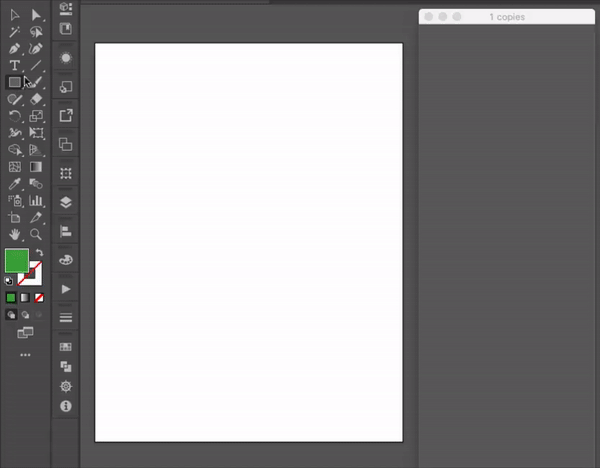
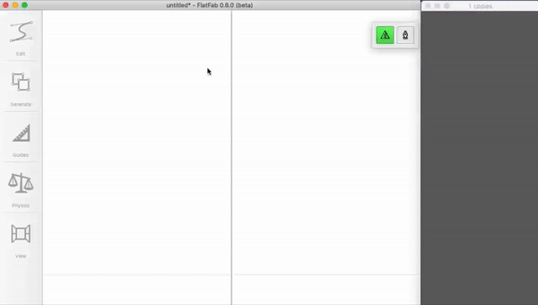
Figure 3. Using Fabricaide with Adobe Illustrator (left) and FlatFab (right).
Figure 3. Using Fabricaide with Adobe Illustrator (left) and FlatFab (right).
Material Warnings and Substitutes
If Fabricaide finds that none of the sheets belonging to the assigned material have enough space for all the parts, the panel will alert the user with a material warning (Fig. 4). The user is shown a preview of the parts that were successfully placed in their design (Fig. 2g) as well as the quantity of parts that could not be placed (Fig. 2e). When short on material, users may decide to resize their design or reassign materials based on either aesthetic or functional reasons, e.g., same color or same thickness. In addition to checking the database for alternative materials, the user can try the material substitutes suggested by the warning (Fig. 2f), which shows up to two same-color substitutes and up to two same-thickness substitutes.
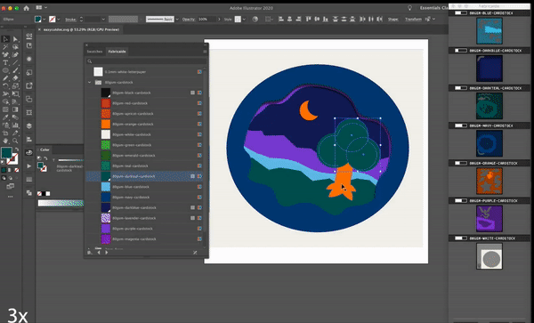
Figure 4. A material warning.
Figure 4. A material warning.
Creating Fabrication-ready Files
When users are finished with their design, Fabricaide provides the option to export the placements as PDFs ready to be cut (Fig. 5). Fabricaide adds the cutouts as holes to the corresponding virtual sheets stored in the material database.

Figure 5. Fabricaide produces fabrication-ready files that can be used by any CNC cutting machine.
ADVANCED FEATURES
Fabricaide also offers advanced features that further aid users with planning, giving them control over the packing configurations, and minimize the chances of error during fabrication.
Material Utilization
While packing previews provide users with information about how the space on a material sheet is being used, users may want to compare how much space is remaining across different materials and their sheets. To facilitate this, Fabricaide offers the notion of material utilization to approximate how much usable space there is on a material sheet. Simply computing the total area remaining on the sheet would not suffice because the arrangement of the pieces misses how usable the remaining space actually is. Material utilization therefore also accounts for the tightness of the packing, since a sheet with parts tightly packed together leaves more available space for future parts than one with parts that are spread out. During the design process, Fabricaide continuously analyzes the material utilization of the current placements of the parts of the design. Fabricaide conveys material utilization to the user in the form of material utilization bars that approximate the percentage of remaining usable material per material type (Fig. 2a), as well as per individual sheet (Fig. 2c). A more filled bar indicates that the sheet has a greater amount of usable space.
Editing Packing Configurations
In our observations of laser cutter users, we noticed that they sometimes choose to arrange parts to help keep track of them at the time of fabrication. For instance, this approach can be useful when they are cutting many parts that looked similar with small distinctions, as is typical for mechanical parts such as gears with different numbers of teeth. To enable this, Fabricaide gives users the option to manually edit the packing for a sheet (Fig. 6a). This opens the sheet with its holes in Illustrator, allowing the user to tweak the positioning of the parts (Fig. 6b). As the user is tweaking the packing configuration, the UI updates itself to show the material utilization of the user's packing. The user's packing configuration is locked unless the user decides to modify or add parts to that material, at which point it must be repacked to ensure that the design is still feasible.
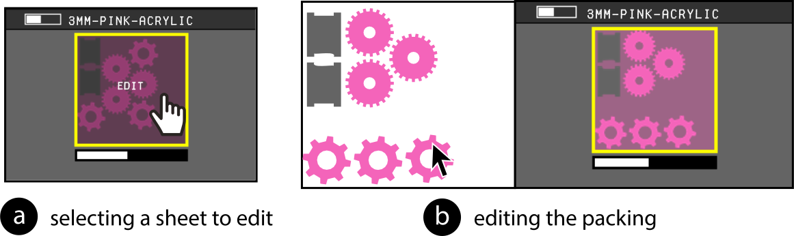
Figure 6. (a) Manually editing packing configurations for aset of gears. (b) The user modifies the packing so that similar gears are grouped together.
THE MATERIAL DATABASE
Several of Fabricaide's functions are enabled by having information on material sheets and their already-existing cut-outs available. To accomplish this, Fabricaide maintains a material database that stores the current states of all material sheets. The material database stores metadata about each material type (dimensions, thickness, color, name), and for each material type, the existing holes of each available sheet. Each material type is also associated with a unique hexadecimal color code, which is used to assign parts of a design to particular materials via the swatch library.
Fabricaide has a material database viewer which allows users to view all available material sheets in the database (Fig. 7). The database viewer enables users to inform their design based on what is available or help them decide whether they should order materials ahead of time if they see that they are low.
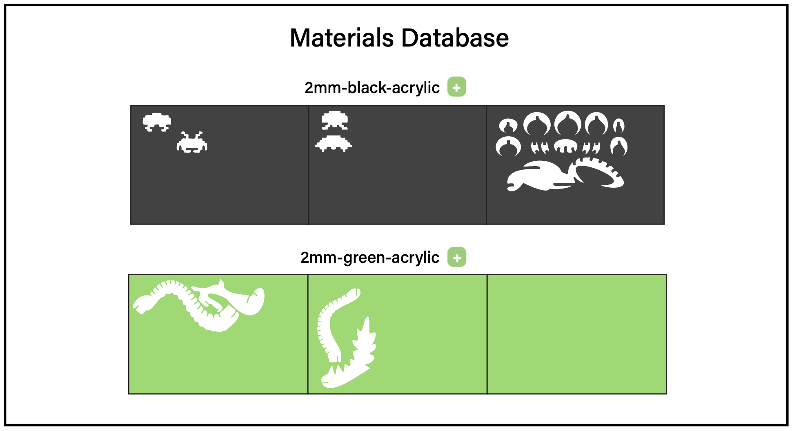
Figure 7. The material database viewer, showing the available sheets for 2mm black acrylic and 2mm green acrylic.
Figure 7. The material database viewer, showing the available sheets for 2mm black acrylic and 2mm green acrylic.
Adding Sheets to the Database
The first time Fabricaide is launched, the material database is empty and only contains the metadata for the supported material types. Users can add blank sheets or virtual copies of existing (used) sheets to the database through the database viewer. Once the user takes a photo of their sheet on a contrasting background (Fig. 8a), they can add it to the database by uploading it to Fabricaide (Fig. 8b) then selecting a point on the photo that identifies the material sheet (Fig. 8c). Fabricaide then creates a virtual representation by extracting the outlines of any holes using image processing techniques. Once the sheet is added, users can use it for their designs (Fig. 8d).
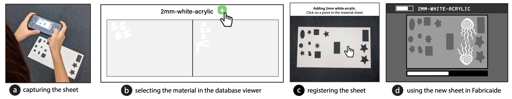
Figure 8. The workflow for adding a sheet to the Fabricaide database.
Figure 8. The workflow for adding a sheet to the Fabricaide database.
Virtually Tracking Cutouts
Every time a design is exported for fabrication, Fabricaide updates the material database with holes corresponding to the cutouts of the newly cut parts. Tracking material usage digitally has the benefit that it does not require additional hardware, such as a camera, and does not require calibration. In addition, it is more accurate since the outlines do not have to be extracted from a photo. If a sheet is modified outside the Fabricaide environment, rendering the virtual copy out of date, users can take a photo of the updated sheet to re-add it to the database and generate a new virtual representation.
IMPLEMENTATION
The Fabricaide interface is implemented in Processing, and is designed to be run in parallel with existing design tools. For Adobe Illustrator compatibility, we used Illustrator scripting to periodically export the current document as an SVG file so that it can be continuously analyzed. The background data processing of the exported document is implemented in Python, and is responsible for preprocessing the design file, sending it to the packing algorithm, and then generating the resulting images that are displayed to the user.
Enabling Compatibility with Design Tools
To make Fabricaide compatible with other design tools, only minor modifications need to be made to both sides. A prerequisite is that the design tool must support exporting designs as 2D vector files that can be read by standard cutting machines (e.g., PDF and SVG formats). Fabricaide can then perform the necessary transformations to the input for packing. For software to support multimaterial sheet assignment, there must be an option to change the appearance of the parts (e.g. via a fill color), however, this is optional.
Splitting into Constituent Materials
Fabricaide first splits a design into its individual materials by analyzing the fill attribute of the parts in the exported SVG file and checking which material it maps to in the database. If a part has a fill that is not mapped to a specific material, it is ignored. The result is a set of SVG images, each containing the contours of the parts assigned to a particular material.
Optimizing Placement on Material Sheets
Once the design is split into its constituent materials, our system's goal is to place (and optionally rotate) each part to make efficient use of material. We implemented a custom 2D packing algorithm which is based on the no fit polygon (NFP) approach with custom heuristics, and additional performance optimizations. The performance-critical part of the algorithm is implemented in C++. We use the CGAL library for computational geometry primitives. Pre- and postprocessing is implemented in Python. The preprocessing is responsible for discretizing SVG elements into polygons, and applying dilation to ensure that the polygons are never under-approximated and to account for laser cutter tolerance.
At a high level, our algorithm is similar to the classic first-fit decreasing heuristic for bin packing. Given a set of parts to place, the algorithm greedily places each one in decreasing order of size (biggest to smallest by the area of their bounding box) onto the first sheet on which it fits, using NFPs to find feasible candidate locations, and a heuristic quality score to select the best candidate location. Given a set of placed polygons \(P\) and holes \(H\), our main heuristic is to minimize $$\text{Area}(\text{BBox}(P)) + \text{Area}(\text{BBox}(P \cup H)),$$ where \( \text{BBox} \) computes the bounding box of the given set of polygons. The contribution of \( \text{Area}(\text{BBox}(P)) \) encourages new parts to be placed tightly together, and the contribution of \( \text{Area}(\text{BBox}(P \cup H)) \) encourages parts to be placed tightly around existing holes. The advantage of this heuristic score is that it can be computed incrementally in constant time per vertex as more parts are placed. This makes it preferable to using a metric such as the material utilization score, which would be significantly more complex to compute incrementally. To break ties in the case of multiple equal scores, the algorithm selects the placement location \( (x,y) \) that minimizes the value of \( x+y \). This has the effect of tightening the packing in the presence of non-convex parts that have large bounding boxes with lots of empty space inside them. If the user enables rotations, they can specify a parameter \( k \) such that the algorithm tries \( k \) uniformly spaced rotations between 0° and 360° and selects the best one (based on the heuristic score). This has the advantage of allowing the user to preserve the grain direction of the material by setting \( k = 1 \). If \( k = 1 \), then the only rotation considered is a 180° spin, which preserves the angle of the geometry with the grain.
We improve the performance of the algorithm by caching the computations of NFPs, not just within a run, as has been done before by Burke and Kendall, but across separate runs of the algorithm. Since subsequent runs of the algorithm will likely be ran on designs that have only changed by a small amount, most of the same parts will be present. For instance, given a design consisting of \( n \) parts, such that only one part differs from the previous design, the number of required NFP computations drops from \( \binom{n}{2} \) to just \( n-1 \). Since the NFP computation is the most expensive part of the algorithm, this caching eliminates a large amount of redundant computation.
Calculating Material Utilization
Since many 2D cutting workflows involve cutting parts from long rolls of fixed-height material, a common metric of material utilization that has been used is the width of the section of sheet that contains the placed parts, i.e. the length of sheet that must be rolled off the roll. This favors tight packings over ones with parts spread far out. This, however, does not give sensible values if we consider fixed-width material sheets with arbitrary existing holes, since the holes themselves may be spread out, and it is usually preferable to place new parts close to the existing holes, as this leaves more usable space left on the sheet. To address the above limitation, we designed the following metric of material utilization: we consider every hole and newly placed part on the sheet, dilate them by some fixed amount, and compute the area of the union of the resulting shapes. A smaller value indicates better material utilization. This metric has the effect of penalizing parts that are placed far away from others (Fig. 9a), and rewarding tighter packings, since the dilated areas will overlap (Fig. 9b). The dilation is set to a default of 20 points or approximately 7mm to accommodate for the recommended minimum amount of spacing between parts to be laser cut (2mm) and the recommended minimum width of a part that can be cut (typically between 2mm to 5mm depending on material thickness).
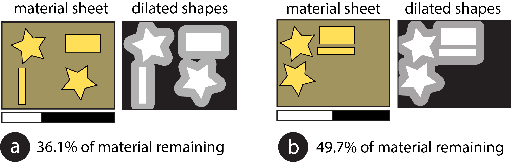
Figure 9. Using dilations to calculate material utilization. (a) shows the effect of a poor packing configuration on the utilization bar for a material sheet while (b) shows the effect of a good packing configuration. As can be seen, a smaller area after dilation indicates a better packing.
Extracting Contours from Photos
To extract the existing holes in a sheet from a photo the user took, Fabricaide first asks the user to select a point in the photo containing the sheet, and uses a flood-fill (adaptive thresholding) algorithm to determine the region of the photo that corresponds to the sheet. It then crops the photo to the bounds of this region, and uses the contour finding method implemented in OpenCV to find the holes. It then discards all contours that are too small and hence are likely due to noise, and smooths the extracted contours using spline interpolation. The resulting contours are then saved as SVGs to the database.
QUALITATIVE USER STUDY
We were interested in seeing how the workflow enabled by our system can support users' design processes. In particular, we wanted to understand: which system features users prioritize as they are designing, why they prioritize those features, and how their priorities might change over time. To this end, we ran a qualitative user study with 6 designers, in which they used Fabricaide with Adobe Illustrator over the period of one week.
Prior to the study, participants filled out an entrance survey which asked about their laser cutting experience. During the study, participants maintained a daily log of their experiences. Check-in meetings were conducted every second day to discuss what participants had reported in their daily log and review any new designs. At the end of the study, participants filled out an exit survey which asked them when and how they used various features and the ways in which those features affected their design process. We concluded with a wrap-up meeting to reflect on their experiences.
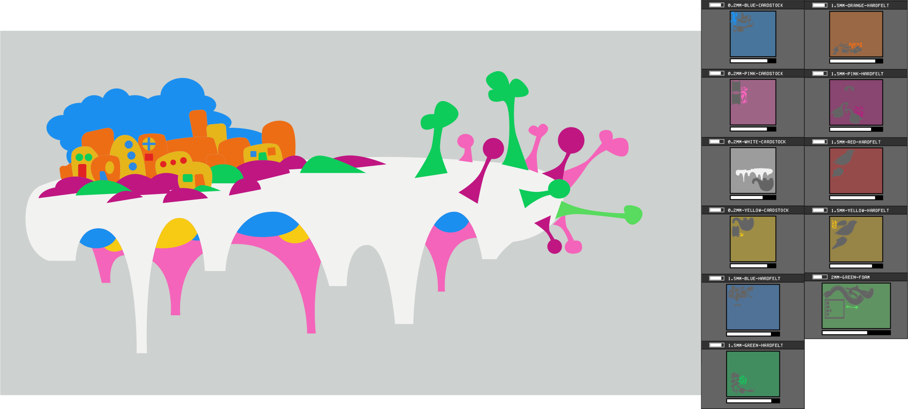
Figure 10. A complex design by P1, comprising of 74 parts split over 11 materials.
Figure 10. A complex design by P1, comprising of 74 parts split over 11 materials.
User Study Findings
To recap, the goal of the study was to understand how Fabricaide could support users in their design process and when users might prioritize certain features. We discuss our findings from the feedback from our check-in meetings and responses to the exit survey.
Fabricaide supported different drawing workflows. While the drawing approaches varied between the participants, they broadly fell into two groups: those who took a largely additive approach to drawing and those who took a largely subtractive approach. Subtractive approaches involve creating initial shapes and refining them by removing portions of geometry, while additive approaches involve progressively creating shapes and extending existing ones. Whether the designer took an additive or subtractive approach to drawing affected when they would pay attention to Fabricaide. P2, who took a largely subtractive approach, noted that Fabricaide was most relevant to her at the beginning, when she would "make an initial shape that will be the approximate size of [her] final design", since afterwards her time was spent on "detail work that does not affect the overall size of [her] design". P4 similarly stated that because she starts with large shapes before cutting out holes or notches, she tended to pay more attention to Fabricaide near the beginning. This suggests that the attention given to Fabricaide is front-loaded for subtractive approaches, as subtracting material will only improve the feasibility of fitting the design onto sheets. Since their entire design depends on the initial shapes created, designers who use subtractive approaches may be better off packing their shapes closer to the beginning rather than at the end. Conversely, designers who frequently had to add shapes in their design process checked Fabricaide more regularly than those who used mostly subtractive approaches. P1's process involved creating an initial sketch on paper and drawing over it in Illustrator. She checked Fabricaide whenever she would finish a component in her design to confirm that it had no issues and that there was enough material.
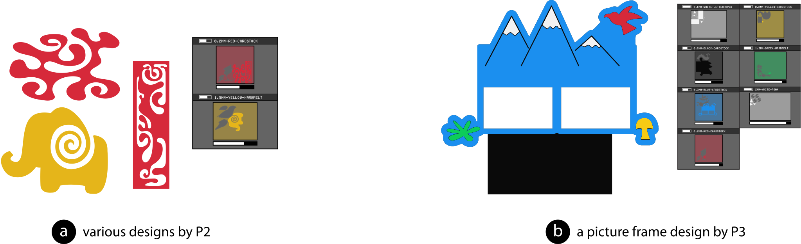
Figure 11. Designs from P2 and P3.
Figure 11. Designs from P2 and P3.
Users became more careful as they designed. Fabricaide encouraged participants to take pauses in their design process. P6 commented that the packing previews "made [her] more careful when [she] was designing" and encouraged her to take a more deliberate approach to drawing. Seeing existing holes in the packing previews made P2 approach her designs as if the materials were being shared with other users, which made her more conscientious about the materials she was using as she did not want to use them all up herself. Since laser cutters and similar fabrication machines are often in shared spaces like workshops, users try to be conscientious of the resources they are using. Showing how the material sheets are being consumed while designing, as well as updating the database when designs are exported, further reinforces the fact that the designs the user creates has consequences on the limited materials they have. Participants who used shapes that were large relative to their material sheet were especially keen to check the previews. P4, for instance, said that she had to check the packing previews many times with her birdhouse design (Fig. 12a) due to its large size. She additionally remarked that "It was good to know how much space I had left as I designed though, so I wouldn't make a huge complicated thing and realize at the end it wouldn't fit." P5 stated that while she felt that the packing previews did not affect what she wanted to design, she kept track of them regularly to ensure that the design could be packed efficiently and confirm that she had enough material. When participants were either making small designs relative to their material sheet or making finer adjustments to their designs, they found it less necessary to check Fabricaide frequently since those cases had little effect on packing feasibility. Similarly, participants also did not need Fabricaide for validation when they were making reference lines or shapes that were not part of the design itself. To focus more on their design task, participants sometimes disabled continuous packing and only repacked as needed. P1 liked to keep Fabricaide paused until she was done with sections of her design, since her process involved frequently refining existing shapes. P3 paused Fabricaide to prevent it from updating while she was still drafting her design. P2 commented that she liked being able to pause Fabricaide, though it came with the trade-off of needing to remember to refresh.
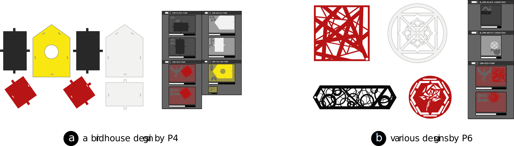
Figure 12. Designs from P4 and P6.
Figure 12. Designs from P4 and P6.
Material warnings prevented shortages. The insufficient material warnings helped participants avoid making designs that could not be fabricated with available materials because when the warnings occurred, participants did not leave them unresolved. Participants addressed warnings either by scaling down the design or switching out materials; the choice depended on the design itself and the amount of flexibility the designer had. Those who needed their parts to have specific measurements tended to switch materials rather than adjust the size of their parts. For example, when P4 encountered warnings as she was designing the birdhouse, which had press fit joints, she originally planned to make everything out of the same colored material but found out that she did not have enough. She resolved the warnings by opting for a multicolored design instead (while maintaining the thicknesses). P1, P2, and P3 commented that another use case for Fabricaide's material warnings would be to quickly check how many copies of a design can fit onto different materials. P2 recalled a time in the past when she had to make a design that required many parts and had to spend a decent amount of time trying to manually calculate how many would fit on her sheet. She said that with the current system, this is easy to achieve by just copying and pasting the shapes on her document until a warning occurs. This could be made even easier by integrating it as a feature into the tool, so that the system would place multiple copies of each part and provide users with feedback as they are designing.
Post-Study Refinements
Following the study, we incorporated several features into Fabricaide that were requested by multiple users to demonstrate that our system has the capabilities to support them.
Using a 3D editor. When we learned that some designers preferred to use CAD software to create 3D designs, we wanted to ensure that Fabricaide could indeed support that workflow. Because Fabricaide is a stand-alone application, rather than an add-on to an existing program, it can work alongside any software that can export vector files used by a cutting machine. To demonstrate this, we added compatibility with FlatFab (Fig. 13a), a design tool for creating 3D structures from 2D planar sections.
Making multiple copies of designs. Several designers from the study felt like they could use Fabricaide's fast automatic packing to keep track of how many copies of their design could be fabricated. To aid in this process, we implemented a copies feature that allows the user to specify how many copies of their design they wish to fabricate (Fig. 13b). As this was a use case that was mentioned in the study, we additionally provide the option to pack the maximum number of copies for a design, which is calculated via a binary search and displayed to the user.
Displaying additional sheets needed.Since some designers said they would prefer to buy new sheets if they ran out of material, we implemented a feature to capture these use cases (Fig. 13c). Material warnings were modified to state how many additional blank sheets are needed to accommodate a design that is short on certain materials. If prices are known, this can be further modified to show the cost of additional material -- which may incentivize designers to be more conservative with how much material they use.
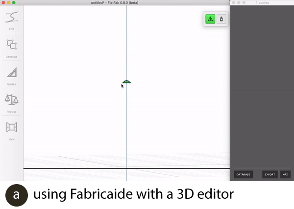
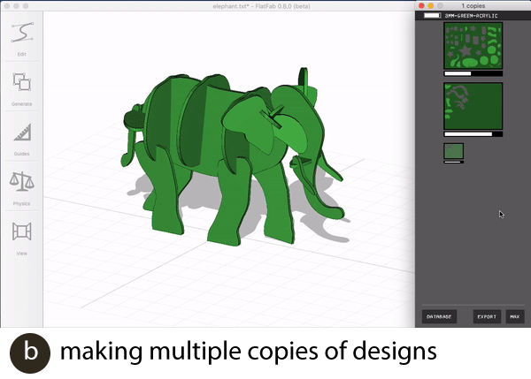
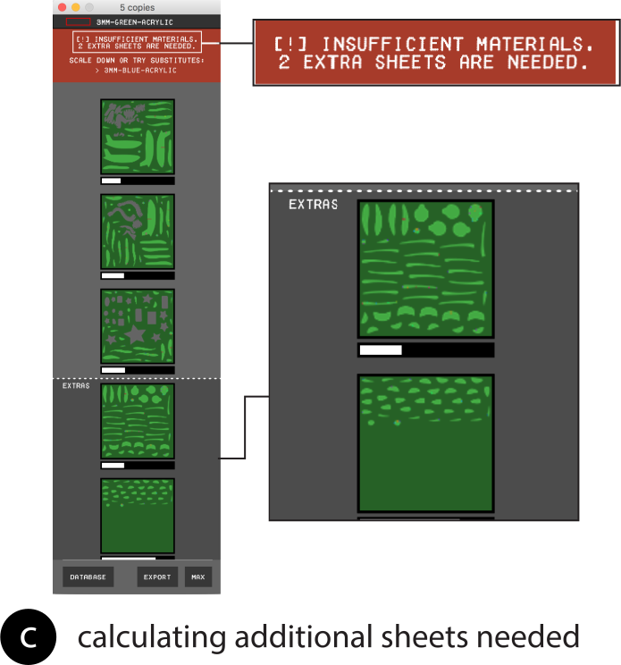
Figure 13. Refinements made to Fabricaide following the user study.
Figure 13. Refinements made to Fabricaide following the user study.
DISCUSSION
We discuss how the feedback we received can be used to improve similar design tools for fabrication, which incorporate information on material constraints.
Know when to show updates to the user
A key quality for interfaces that provide continuous feedback to the user is knowing when updates should be made and displayed. Displaying updates constantly is helpful for ensuring that users have up-to-date information, but comes at the expense of wasting computation power or becoming a distraction. As seen in the user study, whether the UI should continuously provide feedback to the user depends on where they are in their design process. In an ideal scenario, the interface would update more frequently when users are making significant changes to their design than when making finer adjustments. The simplest way to address this is to give users the option to toggle between continuous and manual updates, but it may also be beneficial to enable the system to infer when updates should be made. One option would be to automatically pause updates when the user is making many changes over a short period of time and resume once the user is idle.
Provide warnings at appropriate times
It is important that users are aware of any issues (e.g. material shortages) in their design in a timely manner so they can address them right away. Similar to the previous point of knowing when to update, future systems can be expanded to know when warnings need to be made. Care must be taken to not show warnings earlier than needed to avoid distracting the user or providing false positives.
Encourage users to be less wasteful
Tools that incorporate information about available materials have the opportunity to encourage users to be more mindful of their making practices. As observed in the study, one designer believed that she was sharing materials with others, which affected the way she approached her designs. Encouraging more material-conscious design practices has not only financial benefits (e.g., users save money on purchasing new material by reusing existing ones), but environmental and social benefits as well (e.g., materials that can be used for essential purposes can be depleted more slowly).
EVALUATION OF PART PLACEMENT ALGORITHM
The goal of Fabricaide's part placement algorithm is to be fast enough to not be a hindrance to interaction without overly sacrificing the quality of the solutions. Here we present a quantitative evaluation of the performance of our implementation to demonstrate its suitability to this task.
Benchmark Dataset
To ensure that our benchmarks were conducted with respect to geometries typical of laser-cut designs, we created a dataset consisting of parts drawn from the designs of our user study participants, which, in total, contained 246 parts. To build our dataset, we created 10 sets of 100 parts each, which were randomly sampled from the parts of the users' designs. The parts, when discretized with a tolerance of 2.5pts (0.035 inches) and dilated by 5pts (0.07 inches), have an average of 27 vertices. 54% of them are non-convex, and 13% contain composite holes. The target sheets are blank sheets that are sufficiently large so as to not constrain the solution (i.e. they are larger than the bounding box of any possible configuration of the parts).
Evaluation of Runtime
We ran our experiments on a budget personal desktop computer equipped with an AMD Ryzen 5 2600X processor and 16GB of DDR4 main memory. The results of our experiment are shown in Fig. 14. For each number of parts placed, we report the average runtime over the 10 sets. The scaling of the runtime appears approximately quadratic; packing twice as many parts takes roughly four times as long. This is congruent with the theoretical complexity of the algorithm, which, assuming parts have a constant number of vertices, is quadratic in the number of parts.
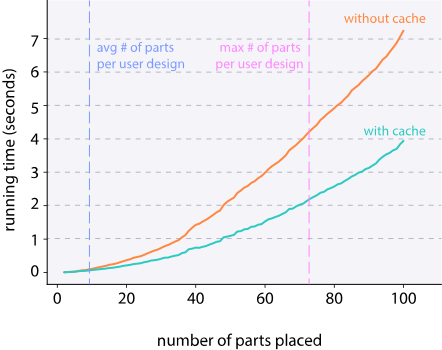
Figure 14. Average running times of the packing routine for various numbers of parts to place.
Figure 14. Average running times of the packing routine for various numbers of parts to place.
We observe that our algorithm can handle 100 parts in just a few seconds with caching enabled, which is far more parts than in any individual participant's design, which had an average of 9. The largest had 74 parts, but spread over 11 materials, which are packed separately (Fig. 10). This demonstrates that our system is capable of packing at interactive speeds for typical laser-cut designs using modest personal computing hardware.
Evaluation of Solution Quality
To ensure that our algorithm has not sacrificed solution quality to achieve its speeds, we compared the runtime and quality to Deepnest, a state-of-the-art open-source nesting tool. Deepnest uses a metaheuristic search, i.e., it can run for an arbitrarily long time searching for better quality solutions. We therefore performed two comparisons. For each set of parts in our dataset, we measured the time taken for Deepnest to produce its first feasible solution, and we recorded the best solution obtained after running it for 5 minutes. Deepnest was configured with equivalent parameter settings (curve tolerance, dilation, etc.) to ours to ensure consistency. To compare solution quality, we measure the area of the bounding box of the placed parts, which is a fair comparison since this value is used by both our and Deepnest's objective functions. Deepnest found solutions for nine of our ten input sets, but, likely due to a bug, was unable to solve the remaining one. We therefore consider only the nine input sets that were solved in our comparison.
On average, Deepnest found its first feasible solution after 31.3 seconds, which is 4.3x longer than our algorithm without any cross-run caching at 7.3 seconds. The average quality of the first solution was also 8% worse than that of our algorithm. The best solutions found by Deepnest after 5 minutes were, on average, just 3% better than Fabricaide's.
CONCLUSION
In this work, we investigated shortening the feedback loop between design creation and fabrication preparation for machine-cut objects. We presented Fabricaide, a tool that supports users in designing machine-cut objects by interleaving the processes of creating and preparing them for fabrication. In our qualitative user study, we saw how Fabricaide supported users and played a role in their design process, and used their feedback to provide insights on how to further improve interfaces for similar fabrication workflows. Our technical evaluation demonstrated that Fabricaide can handle typical user designs at interactive speeds on modest hardware.
Our user study findings open up several directions for future research. As touched upon, users can be more conservative with their materials if they believe that they are being shared with others. Possible extensions of Fabricaide include supporting multiple concurrent users and investigating how this can encourage conscientiousness or enable collaborative fabrication workflows. It would also be interesting to consider how Fabricaide can intelligently use material information during the design process -- such as preserving the grain direction of textured materials, suggesting material substitutes that consider physical (not solely visual) properties, or warning users about making cuts that are incompatible with the material type.
While Fabricaide was built to be used at design time, an avenue for future work is how such a tool could assist users at fabrication time as well, especially if it can safeguard against fabrication errors. For example, a future version of the system can allow users to verify that they are using the correct material sheet by uploading a photo and checking that it matches the assigned sheet in their exported file. This process can be more automated with an overhead camera, as mentioned before.
Finally, while Fabricaide was built to work with 2D cutting machines, future research can explore how the principles behind our techniques could be applied to 3D subtractive manufacturing processes, such as CNC milling.
ACKNOWLEDGMENTS
We thank the designers who participated in our formative interviews and user study. We also thank Karan Singh and James McCrae for the FlatFab models, as well as Patrick Baudisch, Steve Hodges, and James McCann for their valuable feedback. This material is supported by the National Science Foundation under Grant No. 1716413.